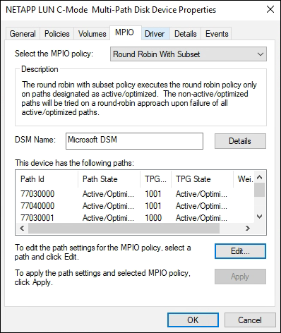

Dokumentationsänderungen beantragen
Dokumentationsänderungen beantragen In GitHub bearbeiten
In GitHub bearbeiten Leitfaden für Beitragende
Leitfaden für BeitragendeVerwenden von Windows Server 2019 mit ONTAP
Beitragende
Booten des Betriebssystems
Es gibt zwei Optionen für das Booten des Betriebssystems: Durch die Verwendung von lokalem Booten oder SAN-Boot. Zum lokalen Booten installieren Sie das Betriebssystem auf der lokalen Festplatte (SSD, SATA, RAID usw.). Informationen zum Booten über SAN finden Sie unten.
SAN Booting
Wenn Sie sich für SAN-Bootvorgang entscheiden, muss dies von Ihrer Konfiguration unterstützt werden. Mithilfe des NetApp Interoperabilitäts-Matrix-Tools können Sie überprüfen, ob Ihr Betriebssystem, HBA, die HBA-Firmware und das HBA Boot BIOS sowie die ONTAP-Version unterstützt werden.
-
Ordnen Sie die SAN-Boot-LUN dem Host zu.
-
Vergewissern Sie sich, dass mehrere Pfade verfügbar sind. Denken Sie daran, dass mehrere Pfade nur verfügbar sind, wenn das Host-Betriebssystem betriebsbereit ist und auf den Pfaden ausgeführt wird.
-
Aktivieren Sie das SAN-Booten im Server-BIOS für die Ports, denen die SAN-Boot-LUN zugeordnet ist. Informationen zum Aktivieren des HBA-BIOS finden Sie in der anbieterspezifischen Dokumentation.
-
Starten Sie den Host neu, um sicherzustellen, dass der Startvorgang erfolgreich ist.

|
Sie können die in diesem Inhalt angegebenen Konfigurationseinstellungen verwenden, um die mit verbundenen Cloud-Clients zu konfigurieren "Cloud Volumes ONTAP" Und "Amazon FSX für ONTAP". |
Windows Hotfixes werden installiert
Wir schlagen vor, dass auf dem Server neuestes kumulatives Update installiert wird.
|
|
Wechseln Sie zum "Microsoft Update Catalog 2019" Website, um die erforderlichen Windows Hotfixes für Ihre Windows-Version zu erhalten und zu installieren. |
-
Laden Sie Hotfixes von der Microsoft Support-Website herunter.
|
|
Einige Hotfixes stehen nicht zum direkten Download zur Verfügung. In diesen Fällen müssen Sie einen bestimmten Hotfix von Microsoft Support-Mitarbeitern anfordern. |
-
Befolgen Sie die Anweisungen von Microsoft zur Installation der Hotfixes.

|
Viele Hotfixes benötigen einen Neustart Ihres Windows-Hosts, aber Sie können abwarten, den Host neu zu starten, bis nach Sie die Host Utilities installieren oder aktualisieren. |
Installieren der Windows Unified Host Utilities
Die Windows Unified Host Utilities (WUHU) sind eine Reihe von Softwareprogrammen mit einer Dokumentation, mit der Sie Host-Computer mit virtuellen Laufwerken (LUNs) auf einem NetApp SAN verbinden können. Es wird empfohlen, das neueste Utility Kit herunterzuladen und zu installieren. Informationen zur Konfiguration VON WUHU und Anweisungen finden Sie unter "WUHU 7.1 Dokumentation".
Multipathing
Sie müssen MPIO-Software installieren und Multipathing einrichten, wenn Ihr Windows-Host über mehr als einen Pfad zum Speichersystem verfügt. Ohne MPIO-Software kann das Betriebssystem jeden Pfad als separate Festplatte sehen, was zu Datenbeschädigungen führen kann. Die MPIO-Software stellt für alle Pfade eine einzelne Festplatte zum Betriebssystem bereit, und ein gerätespezifisches Modul (DSM) managt den Pfad-Failover.
Auf einem Windows-System sind die beiden Hauptkomponenten einer MPIO-Lösung ein DSM und das Windows MPIO. MPIO wird für Windows XP oder Windows Vista auf einer virtuellen Hyper-V-Maschine nicht unterstützt.
|
|
Wenn Sie die MPIO-Unterstützung auswählen, aktiviert die Windows Unified Host Utilities die integrierte MPIO-Funktion von Windows Server 2019. |
SAN-Konfiguration
Nicht-ASA-Konfiguration
Für eine nicht-ASA-Konfiguration sollte es zwei Gruppen von Pfaden mit unterschiedlichen Prioritäten geben.
Die Pfade mit den höheren Prioritäten sind aktiv/optimiert, was bedeutet, dass sie vom Controller gewartet werden, wo sich das Aggregat befindet.
Die Pfade mit den niedrigeren Prioritäten sind aktiv, werden aber nicht optimiert, da sie von einem anderen Controller bereitgestellt werden.
|
|
Die nicht optimierten Pfade werden nur verwendet, wenn keine optimierten Pfade verfügbar sind. |
Das folgende Beispiel zeigt die richtige Ausgabe für eine ONTAP-LUN mit zwei aktiv/optimierten Pfaden und zwei aktiv/nicht optimierten Pfaden.

Konfiguration des gesamten SAN-Arrays
Für die gesamte SAN Array (ASA)-Konfiguration sollte eine Gruppe von Pfaden mit einzelnen Prioritäten vorhanden sein. Alle Pfade sind aktiv/optimiert, das heißt, sie werden vom Controller verarbeitet und der I/O wird auf allen aktiven Pfaden gesendet.

|
|
Verwenden Sie keine unverhältnismäßig hohe Anzahl von Pfaden zu einer einzelnen LUN. Es sollten nicht mehr als vier Pfade erforderlich sein. Mehr als acht Pfade können bei Storage-Ausfällen zu Pfadproblemen führen. |
Empfohlene Einstellungen
Auf Systemen, die FC verwenden, sind bei der Auswahl von MPIO die folgenden Zeitüberschreitungswerte für Emulex und QLogic FC HBAs erforderlich.
Für Emulex Fibre Channel HBAs:
| Eigenschaftstyp | Eigenschaftswert |
|---|---|
LinkTimeOut |
1 |
NodeTimeOut |
10 |
Für QLogic Fibre Channel HBAs:
| Eigenschaftstyp | Eigenschaftswert |
|---|---|
LinkDownTimeOut |
1 |
PortDownRetryCount |
10 |
|
|
Windows Unified Host Utility legt diese Werte fest. Detaillierte empfohlene Einstellungen finden Sie im "Windows 7.1 Host Utilities – Installationshandbuch". |
Bekannte Einschränkungen
Für Windows Server 2019 sind keine Probleme bekannt.